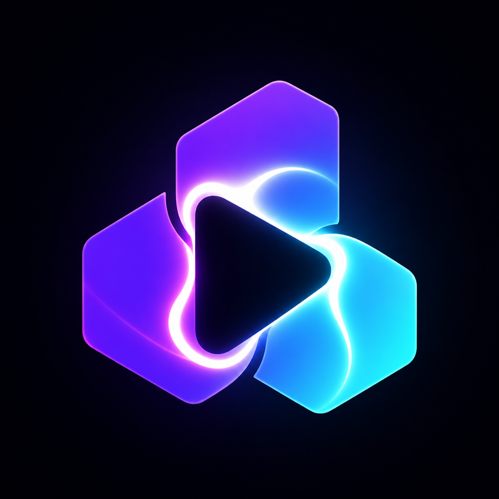
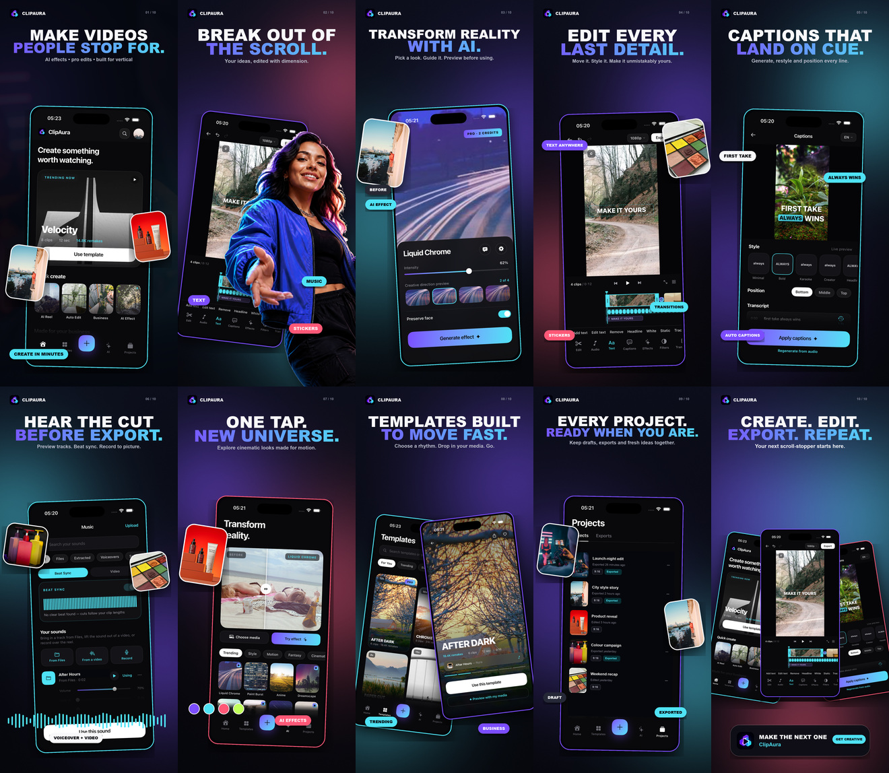

From clips to first cut
Start with a template, automatic edit, photo-to-video idea, or AI reel brief, then carry your own media into a focused editing flow.
CREATIVE IOS VIDEO STUDIO
Smart templates, AI effects, beat-synced editing, captions, Brand Kits, and polished export in one focused creative flow.


Start with a template, automatic edit, photo-to-video idea, or AI reel brief, then carry your own media into a focused editing flow.
Trim on a real timeline, add text and stickers, preview music, detect beats, record voiceover, generate captions, and refine transitions and colour.
Explore guided AI effects, on-device subject cutout, polished export, and Brand Kit workflows built for creators and businesses.
PRIVACY WITH A CLEAR BOUNDARY